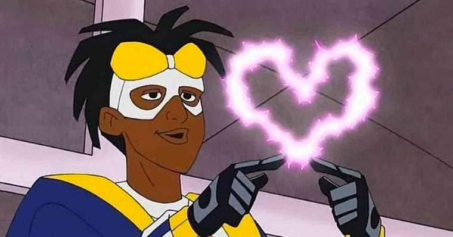

Visão Geral do Arquivo

Bem-vindo ao registro histórico das ocorrências em Dakota após a detonação do gás mutageno nas docas da cidade.
Este portal reúne relatos das testemunhas, fichas policiais do DPCD e as ações do vigilante conhecido como Super Choque.